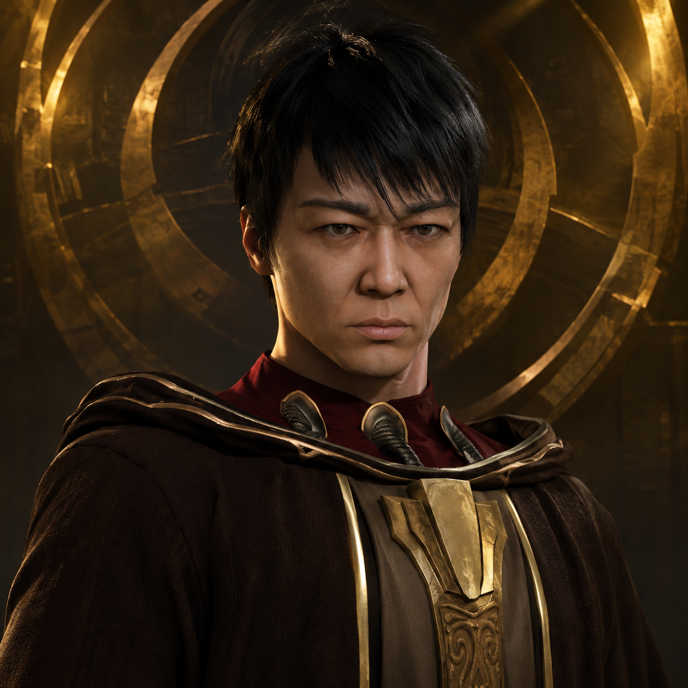

ACHURA · SAISIO III · ROGUE CAPSULEER
SEIRYUN
The Rogue Cultivator
His birth name is Jat Sing. His bestowed name is Seiryun. His path belongs to no throne.
A personal record of a capsuleer who studies the traditions of the Amarr Empire while following a path of cultivation beyond the boundaries of empire.
ENTER THE ARCHIVE ↗
JAT SING / SEIRYUN
“He does not reject the world's praise.THE CULTIVATOR'S WAY
He simply has no need of it.”
Biography
From Saisio III to the wider reaches of New Eden.
02 / PHILOSOPHYThe Way
Contemplation, discipline, and a path without allegiance to a throne.
03 / VESSELSShips
Amarr vessels, chosen for their design and traditions.
04 / RECORDSChronicles
A growing record of journeys and moments in New Eden.